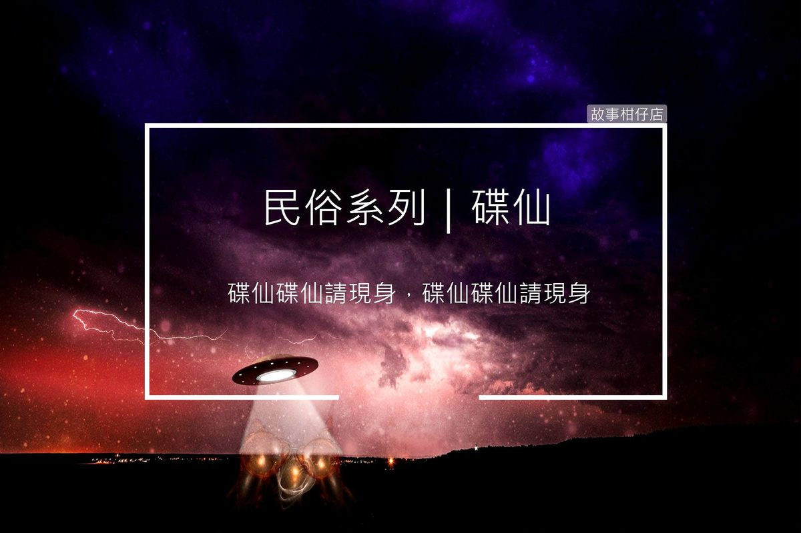

碟仙

碟仙是一種占卜方式，在台灣民國五十到六十年代廣為流傳，是以一張佈滿各種文字的紙，加上一個倒反的小碟子為工具，三到四人手按碟子，心中默念碟仙碟仙請現身之類的話語，請來鬼靈附身在碟子上，再問問題尋求解答。後政府為了端正風氣，雷厲風行查禁碟仙，使後來碟仙遊玩的風氣瞬間消失。
〈碟仙〉
「別過來！別過來！」
一身冷汗醒來，阿華不禁大口喘氣，這是第四次夢到紅衣女。
阿華一閉眼，彷彿就又見紅衣女長髮飄飄，眼神空洞，慘白的雙手向他揮著，裂嘴笑到耳際，最要命的是脖上一條麻繩，勒得女子的頸只剩幾公分寬，頭還歪倒到肩。
「都是阿明，為把妹玩個屁碟仙！」他心裡咒罵。
想起當日跑進廢棄學校的禮堂，阿明拿出碟仙用具，跟他使個眼色，叫他一起唬唬他約來的妹，轉頭看看身後的兩個女孩，鐵齒的阿華雖然不甘願，但還是配合兄弟演演戲。
「碟仙碟仙請現身，碟仙碟仙請現身～～。」
燭火隨著不時漏進的風搖晃著，照的影子忽大忽小，加上半夜12點的加持，再怎麼不信邪的阿華都有點動搖。
「來了！來了！」其中穿短T的女孩顫抖著說，另一個長髮女孩看起來倒是相當鎮定，阿明相當滿意地看著阿華，挑了眉示意，表達阿華選得不錯，不快不慢的時機點讓碟子動了起來。
「請問您從哪來？」阿明率先發問，碟子指向「這」，驚的短T女孩摀嘴尖叫，緊張的看著左右，阿華被阿明用腳踢了一下，才稍微裝得有些驚訝。
一連串的問題，碟子回答的準確率高的嚇人，不禁讓阿明覺得這戲演得太逼真。
「我跟阿華誰比較帥？」阿明嬉笑問最後一題，碟子瞬間跑到阿華面前，開始飛快轉動，正當阿明覺得阿華太浮誇，阿華居然開始歇斯底里地大叫，隨後就暈過去。
再醒來他已被丟包在某個廟口，阿華昏頭昏腦地坐起，打了阿明手機也無人接聽，暗暗幹譙這有異性沒人性的禽獸。
回去的一個禮拜，阿華被噩夢纏身，都忘了問阿明怎麼回事？
他撥了電話，阿明劈頭滿懷歉意說：「拍謝，那天你整個人都很不對勁，我又載著妹，所以只好先把你放到廟裡，沒事吧？」
「沒事？你他媽的有女人就忘了兄弟，還好我命硬。不過，跟你一起來的兩個妹勒？都沒事吧？」
「兩個妹？只有一個穿短T的妹阿？」
這時，阿華身後伸出一隻慘白的手，掛上了他的電話。
翻翻農民曆、挑個好日子，
一起來故事柑仔店
聽聽民俗的故事。